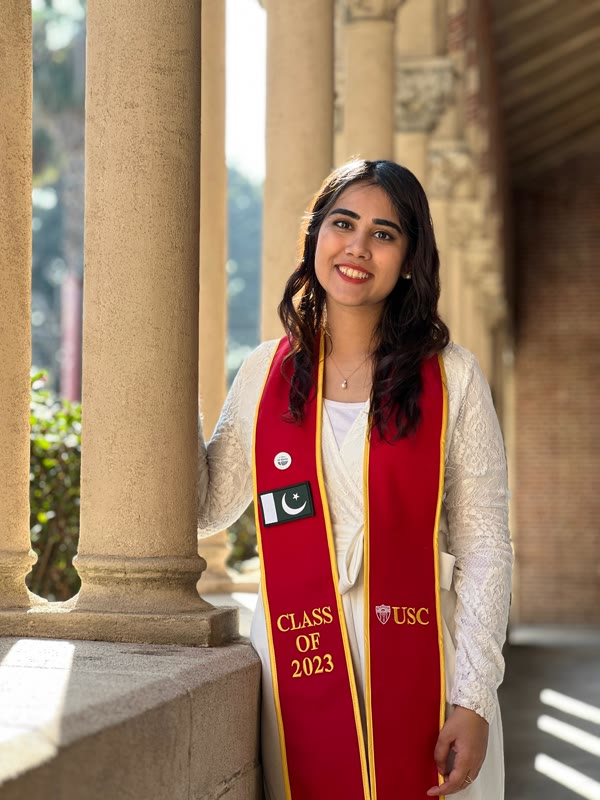

Zainab Soomro

Aga Khan UniversitySenior Instructor and Researcher
MS Health Data Science
University of Southern CaliforniaM.S. Applied Data Science
Fulbright Scholar
Lahore University of Management SciencesB.S. (Honors) Management Science
Minor in Computer Science
About Me
I am a Senior Instructor and Researcher at Aga Khan University, where I am core faculty in the MS Health Data Science program. Previously, I was a Data Scientist at Indus Hospital and Health Network, where I established the hospital's Data Science department. I completed an M.S. in Applied Data Science at the University of Southern California as a Fulbright scholar, and worked as a researcher in iLab, advised by Prof. Laurent Itti. My work applies data science to health and public health problems, drawing on time-series modeling, predictive analytics, infectious disease analytics, and emergency department data.
 Indus Hospital and Health Network
Indus Hospital and Health NetworkMay 2024 – Apr 2026
 Reckitt
ReckittImplementation and Activation Lead, Jan 2021 – Dec 2021
 Shan Foods
Shan FoodsManagement Trainee, Strategy, Oct 2020 – Dec 2020
 7Vals
7ValsAssociate Product Manager, Jul 2020 – Oct 2020
 Telenor Microfinance Bank (Easypaisa)
Telenor Microfinance Bank (Easypaisa)Channels Intern, Jul 2019 – Aug 2019
 Lahore University of Management Sciences
Lahore University of Management SciencesB.S. Management Science, Aug 2016 – Jun 2020
Research
Current work. At Aga Khan University, I conduct and contribute to regional analytics research in infectious disease analytics, time-series modeling, and predictive analytics. Previously, at Indus Hospital and Health Network, I structured more than 1M emergency department visits into non-communicable disease (NCD) categories with over 95% accuracy, enabling survival analysis, longitudinal trend monitoring, and real-time dashboards, and built clustering methods on 7,000+ toxicology-related ED visits and stratified forecasting pipelines (ARIMA, SARIMAX, XGBoost, Prophet, Temporal Fusion Transformers) across 1M+ ED records.

Ambient Temperature and Non-Communicable Disease Presentations and Mortality in a Pakistani ED
Journal of Climate Change and Health, 2026
Accepted for publication
A retrospective study of 1,003,894 adult ED patients at Indus Hospital and Health Network (July 2014 – June 2024) examining how ambient temperature affects ED visits and mortality for hypertension, diabetes, ischemic heart disease, obstructive lung disease, chronic kidney disease, and stroke. Using accelerated failure time and autoregressive distributed lag models, mortality rose below 20°C and at or above 31°C, and extreme heat had a delayed effect on mortality for hypertension, ischemic heart disease, and stroke.

Mortality Trends and Risk Factors for Emergency Department Visits and Admissions among Diabetic Patients, 2014–2024: A Decade-Long Retrospective Cohort Study
BMJ Open
Under review
A decade-long cohort of 159,496 ED visits by adults with diabetes at Indus Hospital and Health Network, identified with a validated rules-based natural language processing algorithm (accuracy ≥ 0.95). Diabetic ED visits more than doubled over the decade and total mortality rose from 12 to 21 per 1,000 visits; age, male sex, triage acuity, sepsis, comorbidity burden, diabetic complications, and lower ambient temperature were independently associated with higher mortality.

Predicting the NCD Tide in the Emergency Department of a Tertiary Care Hospital in Pakistan Using Weather & Calendar Variables
Indus Hospital and Health Network
Manuscript in preparation
Forecasting daily non-communicable disease visits to the ED at Indus Hospital and Health Network (2008–2024) from calendar and weather variables, comparing ARIMA, SARIMA, SARIMAX, XGBoost, NB-GAM, Prophet, and Temporal Fusion Transformer models. Optimized XGBoost performed best, improving RMSE by 43.3% and MAPE by 54% over a naïve seasonal baseline, and weather variables improved prediction accuracy.

Analyzing Brexit's Impact using Sentiment Analysis and Topic Modeling on Twitter Discussion
21st Annual International Conference on Digital Government Research (dg.o), 2020
Sentiment analysis and topic modeling of more than 16 million Brexit-related tweets, identifying a relationship between public sentiment and the British pound sterling exchange rate, with prominent discussion topics reflecting real-world events. Nominated for the Best Paper Award in the Social Media and Government track.

Sentiment, Count and Cases: Analysis of Twitter Discussions during COVID-19 Pandemic
7th International Conference on Behavioural and Social Computing (BESC), 2020
Sentiment analysis of more than 18 million COVID-19-related tweets, investigating relationships between public discourse, country-level mentions, and reported case trends across Italy, the United States, and the United Kingdom.
Awards
- Fulbright Scholarship, M.S. Applied Data Science, University of Southern California
- Best Paper Award nomination, Social Media and Government Track, dg.o 2020
- Pearson Edexcel High Achiever Award: 4th highest mark in the world in International A Level Mathematics, June 2016
- Outstanding Cambridge Learner Award, Saudi Arabia: highest mark in the Central Province in Cambridge A Level Applied Information and Communication Technology, June 2016
- Outstanding Cambridge Learner Award, Saudi Arabia: highest mark in Riyadh in Cambridge IGCSE Mathematics, June 2014
Teaching
Skills
- Languages: Python, C++, R, SQL
- Machine learning: PyTorch, TensorFlow, Scikit-learn, XGBoost, NLP, OpenCV
- Data & infrastructure: Apache Spark, Hadoop, MySQL, MongoDB, Firebase, AWS
- Tools & methods: Pandas, NumPy, Power BI, GitHub, REST APIs, Optimization